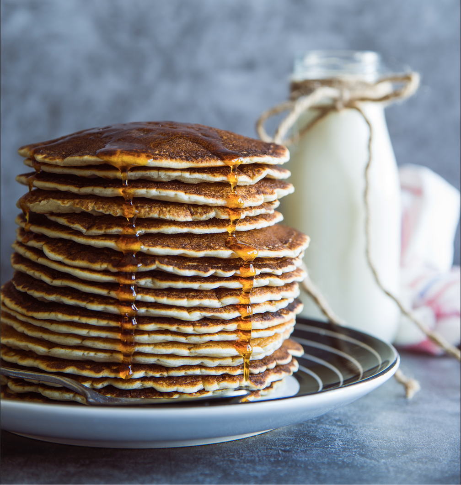

Home
Buttermilk Pancakes

Fluffy and delicious buttermilk pancakes for the
perfect morning breakfast to get the day started. Pancakes are a staple breakfast
in every household because it is easy to make. Follow this recipe and tutorial to make
most delicious pancake possible and enjoy every bite.
Ingredients
- 1 cup all-purpose flour
- 1 tablespoon sugar
- 1 teaspoon baking powder
- 1/2 teaspoon baking soda
- 1/4 teaspoon salt
- 1 cup buttermilk
- 1 large egg
- 2 tablespoons melted butter
- Butter or oil for cooking
Instructions
- In a large bowl, whisk together the flour, sugar, baking powder, baking soda, and salt.
- In another bowl, whisk together the buttermilk, egg, and melted butter.
- Pour the wet ingredients into the dry ingredients and stir until just combined. Do not overmix; some lumps are okay.
- Heat a griddle or non-stick skillet over medium heat and lightly grease with butter or oil.
- Pour 1/4 cup of batter onto the griddle for each pancake. Cook until bubbles form on the surface and the edges look set, about 2-3 minutes.
- Flip the pancakes and cook for another 1-2 minutes, until golden brown and cooked through.
- Serve warm with your favorite toppings such as maple syrup, fresh fruit, or whipped cream.